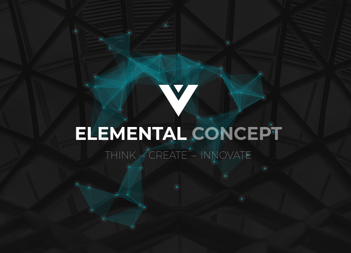

Product Discovery
Overview
The Product Discovery is a day our team takes to understand a client’s concept, develop and form it into an achievable and viable business proposition with a mapped out plan of how to see it through to a Minimum Viable Product (MVP).
From start to end, the journey is about generating ideas, turning them into defined technological solutions and then designing and building the application.
We are a lean team and our main goal is to understand the client’s needs, come up with smart strategies and not waste money on ill-conceived ideas or unnecessary code.
Pre-Discovery
Research & Planning
To ensure that the PD is going to be successful and productive we conduct a prior research beforehand to examine the market and any competition and identify the latest trends and potential pitfalls on the subject.
We put together a team that covers business, commercial, product, technology and design to gain a strong overview of the market from different perspectives.
The outcomes of this research will drive the direction of the Product Discovery Workshop, ensuring relevant domain knowledge experience is shared and incorporated throughout the discovery process.
UX Competitor Analysis
What we are doing in this is giving our professional analysis of the products, distilling the best of the competitor features, taking their failings and ensuring they don't end up in our products.
The main thing is to understand and deliver the following:
Download and use the competitor apps/sites - Explore the journeys and note everything - Likes, dislikes, impressions and overall analysis.
Understand the current UX patterns trending in that particular marketplace and start thinking about how to improve on it.
Learn whether our client’s unique value proposition (UVP) is strong enough or if they are simply copying what’s already on the market.
Analyse the current marketplace in terms of how well the client’s product would fit in, whether there is a niche or if it is oversaturated.
Note the features setting competitor apps apart and make solid design recommendations to the client.
Note the user feedback to competitor products and use that to shape the product the client wants to create - Essentially, we are gaining the benefit of a competitor having completed a similar product - They make the mistakes first, we capitalise on their user validation.
This pre-discovery work enables us to go into the Product Discovery with a clear idea of the competitor landscape from a usability and product point of view.
The PD team will do a deep analysis into existing systems, focusing particularly on the user feedback to competitor products and use that to shape the product the client wants to create.
As a result, we are going into the PD with a firm knowledge of competitor approaches and how to capitalise on those in our own system.
Tips for getting this done quickly
It is always worth googling comparison articles/reviews of the application type you are looking at:
Take food applications, as an example. Articles, like "The top ten food apps on the market" or "Product X vs Product Y", etc, are doing a lot of our research for us and will help us fill out the report.
They give us a high level view of the main competitors on the market, detailed analysis of pros and cons, invaluable when you want to fill out a report like this quick and meaningfully.
They generally give an idea of the user feedback and the public perception of the product. Add in your own impressions of the app's promo screens, design and (if you have time, go through the app itself for no more than five minutes, taking your impressions) and you have a very solid report to go into Product Discovery with.
Use the App Store and Play Store to your advantage - User feedback will give you real leads on other products, as well as give you detailed accounts of all issues faced by your competitors so far
Trust your own initial impressions - We have you on the team because we trust your point of view. If you have strong opinions about apps that you look at, record them, justify them and use screenshots and references to support your ideas. It’s important for you to value yourself and your voice as a designer. This is particularly important when it comes to giving your professional analysis at the end of the day.
Product Discovery (PD)
Purpose
To help the client turn the idea in to a more concrete vision our team proposed a product discovery workshop to explore the business model, generate ideas on its commercialization and scope what a digital tool might look like and its functionalities.
Through this process we are able to define a potential solution and conclude on the MVP.
Tools used in the product discovery
Our team uses a number of different tools to break down the way in which an organisation creates, delivers and captures value as well as how to flesh that out into a product. Examples include:
- Business Model Canvas
- Persona Mapping
- Storyboarding
- Storymapping
Always bring a notebook and be ready to draw
You will need it. There will be a lot of information flying around and anything you note down might be needed at the end of the day to clarify the storymap or piece together the PD report.
Having a designer present to represent ideas on paper in sketch form is invaluable for us and the client to clarify ideas. Don’t be worried about precision or straight lines, we just need sketches to discuss.
Support your team keep on point - no side conversations
No PD session is ever the same. Depending on the client, the team needs to adapt so we can get everything done in the day so we help him in whatever way we can, writing post-its, starting story-mapping, etc.
We generally have a lot to get through in the PD day and as such, we all need to stay focussed; we all need to hear each-other. Stay in the one conversation, so everyone knows what your thoughts are.
Post-Product Discovery
How to proceed from the Product Discovery
Post Product Discovery session, we will have much more clarity on the appropriate solution and will be in the position to start validating the proposition and any assumptions about what the end-users want.
By the end of the Product Discovery, all stakeholders will:
- Have a clearer understanding of the business model and how the solution is going to work and differentiate itself from the market.
- Have a solid understanding of the different users and how they will use and interact with your system.
- Have an MVP product storymap that lays out all of the different systems and functionality necessary to build to bring the solution to life.
Workshop Outputs
The client will receive a comprehensive overview report of all that was discussed in the workshop, as well as:
- Information Architecture and User Journey Flows
- User and System Personas
- Finalised storymap with clearly distinguished MVP
- Market and competitor analysis
- Recommendations for next steps going forward, including our recommendations of how best to validate the solution pre-build
- Photos of all assets from the day, including sketches, business model canvases, persona brainstorms, storyboard and storymap
- The cost of the product discovery workshop will engage our team of designers, developers and business analysts
Validation & Prototype Creation
It is crucial that the storymap and UVP is validated before the team is ready to start with the Agile development phase.
The team will create a set of wireframes and then a high-fidelity, working prototype. This prototype enable the client to get rapid user feedback before the commit to the cost of design and build.
Usability testing also forms part of this validation. Once the prototype is complete, the designers and product owners will meet with real end users to gather feedback for further refinements.
The client now has a great tool in hand to pitch their business and sway potential investors.
Pre and Post - Product Discovery Work
Pre-discovery - Competitor analysis
It is crucial for the report to be ready and presented to the EC team at least 2 full days before the PD. This way, your research is used.
All have a chance to absorb it and be informed for the day.
Pre-discovery - Room preparation
- Print out persona empathy maps
- Assist the team in general setup - BMCs, post-its, sharpies, etc.
- Strategise with team on how best to lay out the PD session
Post-discovery - persona generation
Taking the empathy maps we filled out in the PD, as well as the notes you took during the day, create all the project personas for Phil’s overview report, using existing templates in Xtensio.
Post-discovery - MVP user-flow
Here we present the MVP Storymap in an information architecture and micro interaction breakdown diagram that breaks down the project into all the different products and their full functional scopes.
Examples of Workshop Outputs
Business Model Canvas
This vital tool breaks down the way in which an organisation creates, delivers and captures value.
- The business model is split into ten fundamental blocks covering the main areas of business as shown.
- This helps all those taking part better understand the context of the solution.

Storyboarding - Persona Creation & User Journeys
We identify the various key users and systems of the application that will interact with the blockchain, build out their personas and create their user-journey using storyboarding techniques. By doing so we clarify the product specifications.
This allows us to scope out the technical requirements of this task and allows us to build up a backlog of tasks that can then be prioritised on a storymap to shape the MVP.
How to structure a user story:
“As a USER, I want to do XXX to be able to XXX”
Always name the particular user, whether it be provide the desired action with the desired result.
An example of an user story could be:
“As a football fan, I would like to view real-time data visuals about Ronaldo, whilst watching the Real Madrid game”
Story map & Product structure
Elemental Concept will produce an initial story map which will indicate the relative priority of product functionality and features that have been identified by the storyboard.
We define the initial release which will be the “Minimum Viable Product” (MVP). In other words, the least amount of work and money required to validate the product, typically the riskiest area or the largest assumption.
Throughout this process we ensure that we can map product features and requirements back to the business goals on the business model canvas.
The highest priority requirements will typically become a focus of the initial stages of development.
These requirements are then summed up in a comprehensive user flow document, which lays out the required functionalities of the system, identifying the MVP and prioritising the tasks.
Elemental Concept will also create a full technical architecture of the system that outlines the technical framework of the project, showing all necessary integrations, APIs, etc. We will design the system to be solid, robust and scalable.
Product Discovery
Minimum Viable Product
Market & Competitor analysis
Business Model Canvas
Storyboarding
Personas
Storymapping
More from Project Casestudies

{kind=link}
{kind=link}
{kind=link}
{kind=link}
{kind=link}
{kind=link}
{kind=link}
{kind=link}
{kind=link}
{kind=link}
{kind=link}
{kind=link}
{kind=link}
{kind=link}
{kind=link}
Company Details

Industry
Information Technology and Services